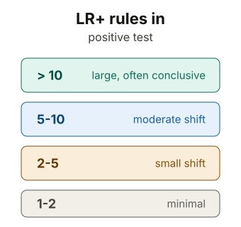
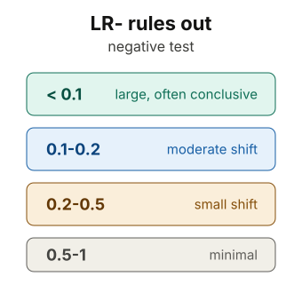

Positive likelihood ratio
LR+ describes how much a positive test increases the probability of disease. Larger values create stronger upward movement.
LR+ = sensitivity / (1 - specificity)
One of the most common ways we use Bayesian analysis in medicine is through likelihood ratios.
Post-test odds = Pre-test odds × LR
LR+ describes how much a positive test increases the probability of disease. Larger values create stronger upward movement.
LR- describes how much a negative test decreases the probability of disease. Smaller values create stronger downward movement.


Example of likelihood ratios in diagnosing MI
Positive likelihood ratios (+LR):
Negative likelihood ratios (-LR):